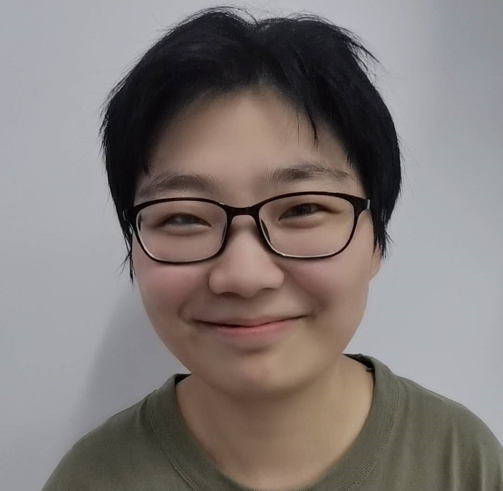
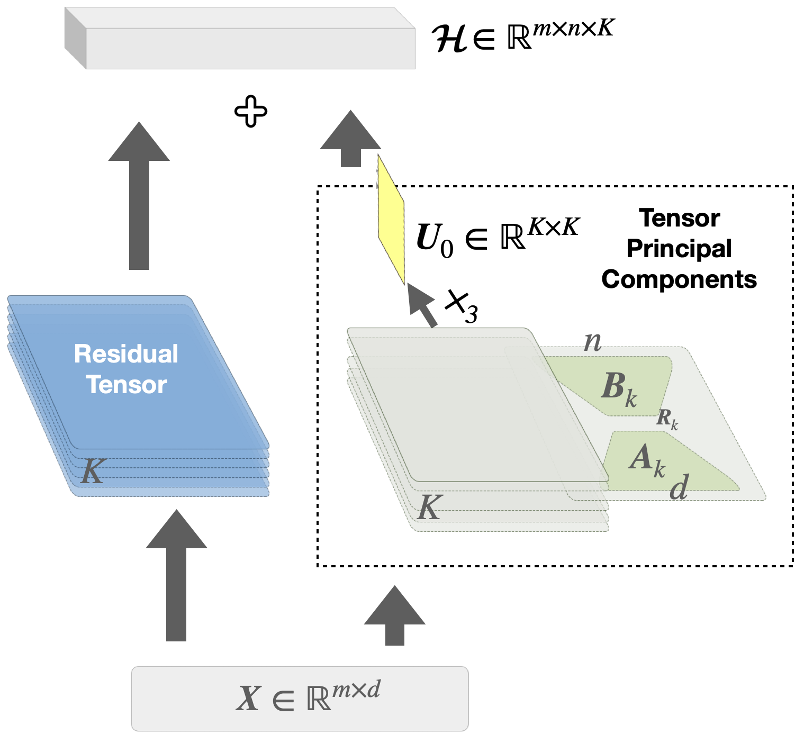
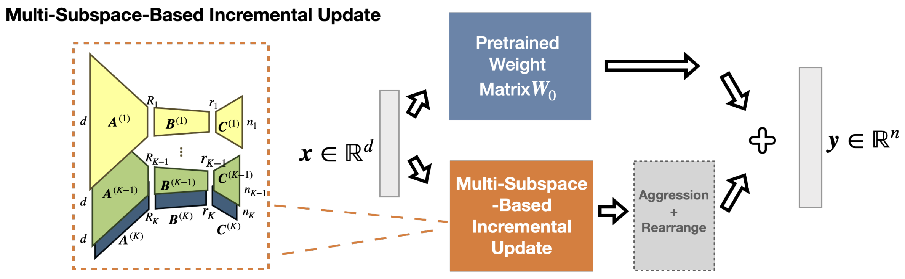
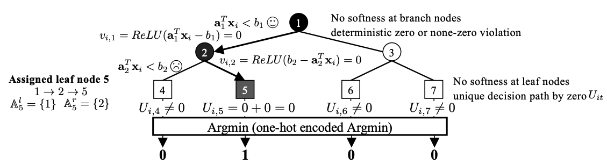
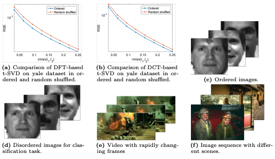
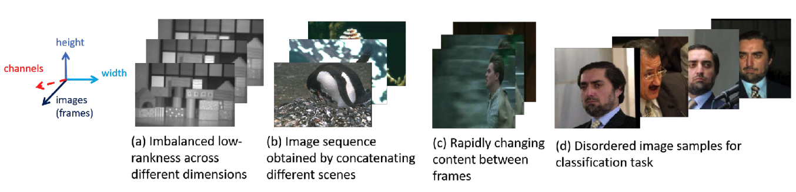
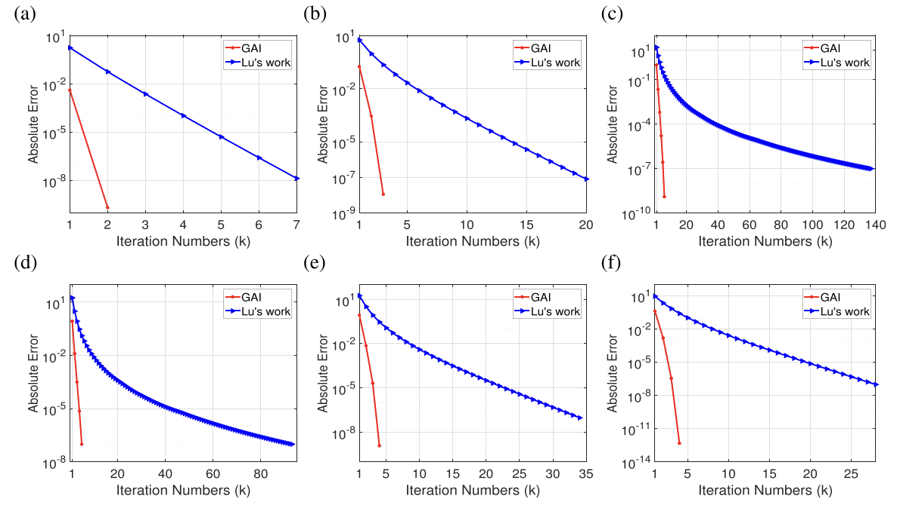

|
Jingjing Zheng (郑晶晶)
"Theory without practice is empty, but equally, practice without theory is blind." — I. Kant
Hello! I'm Jingjing Zheng (she/her), a Ph.D. student in Mathematics at the
University of British Columbia,
supervised by Prof. Yankai Cao.
My research interests include efficient training/inference of large models grounded in theory,
low-rank/sparse representation learning with applications to AI efficiency,
and safety & reliability of LLMs under resource constraints.
My academic background spans art and design (B.A.), mathematics (M.S. and current Ph.D.),
and computer science (completed Ph.D. degree).
I received the Borealis AI Fellowship
(awarded to ten AI researchers across Canada) and the
Government Award for Outstanding Self-financed Students Abroad
(awarded to 650 outstanding young talents worldwide).
In Summer 2024, I was a visiting researcher at the
ZERO Lab, Peking University,
working with Prof. Zhouchen Lin
on low-rank-based efficient fine-tuning of large models.
In Summer 2025, I co-founded
GradientX Technologies Inc.,
a startup focused on building the next generation of personalized financial intelligence.
🌈 I am committed to supporting LGBTQ+ visibility, inclusion, and diversity within academia and STEM communities.
Email /
CV /
Scholar /
GitHub /
LinkedIn
|

|
Recent News
[2026] This summer, I will have a short-term visit to Prof. Qibin Zhao's group at RIKEN.
[2026] One paper accepted to CVPR 2026 (see you in Denver!).
[2025] Joined the Organizing Committee of Women and Gender-diverse Mathematicians at UBC (WGM).
[2025–2026] Appointed to the UBC Green College Academic Committee.
[2025] Our startup GradientX was selected for the Lab2Market Validate Program (Funded).
[2025] Two papers accepted to NeurIPS 2025 (see you in San Diego!).
|
Selected Research
My research focuses on efficient training/inference of large models,
low-rank/sparse representation learning, and tensor optimization.
For the full list, please visit my Publications page
or Google Scholar.
|
|

|
ReFTA: Breaking the Weight Reconstruction Bottleneck in Tensorized Parameter-Efficient Fine-Tuning
Jingjing Zheng,
Anda Tang,
Qiangqiang Mao,
Zhouchen Lin*,
Yankai Cao*,†
CVPR, 2026
paper /
code
Breaks the weight reconstruction bottleneck in tensorized parameter-efficient fine-tuning for large models.
|
|

|
AdaMSS: Adaptive Multi-Subspace Approach for Parameter-Efficient Fine-Tuning
Jingjing Zheng,
Wanglong Lu,
Yiming Dong,
Chaojie Ji,
Yankai Cao*,†,
Zhouchen Lin*
NeurIPS, 2025
paper /
code
Analyzes multi-subspace distribution of weight matrices for adaptive budget allocation in PEFT, improving average accuracy by +4.7% on ViT-Large and +6.9% on GSM8K with LLaMA 2-7B.
|
|

|
Differentiable Decision Tree via “ReLU+Argmin” Reformulation
Qiangqiang Mao,
Jiayang Ren,
Yixiu Wang,
Chenxuanyin Zou,
Jingjing Zheng,
Yankai Cao*,†
NeurIPS, 2025 (Spotlight)
paper /
code
Proposes a differentiable decision tree reformulation using ReLU+Argmin for end-to-end training.
|
|

|
Handling The Non-Smooth Challenge in Tensor SVD: A Multi-Objective Tensor Recovery Framework
Jingjing Zheng,
Wanglong Lu,
Wenzhe Wang,
Yankai Cao*,†,
Xiaoqin Zhang†,
Xianta Jiang†
ECCV, 2024
paper /
code
A multi-objective framework for non-smooth tensor SVD challenges in tensor recovery.
|
|

|
Bayesian-Driven Learning of A New Weighted Tensor Norm for Tensor Recovery
Jingjing Zheng,
Yankai Cao*,†
ICLR, 2024 (Tiny Papers Track)
paper /
code
Bayesian-driven approach for learning weighted tensor norms to improve tensor recovery.
|
|

|
Structured Sparsity Optimization with Non-Convex Surrogates of ℓ2,0-Norm: A Unified Algorithmic Framework
Xiaoqin Zhang*,†,
Jingjing Zheng,
Di Wang,
Guiying Tang,
Zhengyuan Zhou,
Zhouchen Lin
IEEE TPAMI, 2023 (IF: 20.8)
paper /
code
A unified algorithmic framework for structured sparsity optimization with non-convex surrogates.
|
|
AAAI 2022
|
Handling Slice Permutations Variability in Tensor Recovery
Jingjing Zheng,
Xiaoqin Zhang*,†,
Wenzhe Wang,
Xianta Jiang†
AAAI, 2022
paper /
supp /
video /
poster
Addresses slice permutation variability in tensor recovery with a novel optimization approach.
|
Recent Preprints
- Muhammad Ahmad, Jingjing Zheng, Yankai Cao*,†. On Catastrophic Forgetting in Low-Rank Decomposition-Based Parameter-Efficient Fine-Tuning. arXiv:2603.09684, 2026. [paper]
- Jingjing Zheng, Yankai Cao*,†. Adaptive Principal Components Allocation with the ℓ2,g-regularized Gaussian Graphical Model for Efficient Fine-Tuning Large Models. arXiv:2412.08592, 2024. [paper]
- Jingjing Zheng, Wenzhe Wang, Xiaoqin Zhang*,†, Xianta Jiang*,†. A Novel Tensor Factorization-Based Method with Robustness to Inaccurate Rank Estimation. arXiv:2305.11458, 2023. [paper]
|
Experience
-
RIKEN, Japan — Visiting Student (Summer 2026, upcoming)
Upcoming short-term visit to Prof. Qibin Zhao's group at RIKEN AIP, Japan, focused on tensor decomposition and efficient learning.
-
ZERO Lab, Peking University — Visiting Student (05/2024 – 09/2024)
Advised by Prof. Zhouchen Lin. Developed AdaMSS (NeurIPS 2025): adaptive multi-subspace PEFT that improves average accuracy by +4.7% on ViT-Large across 7 image classification datasets and +6.9% on GSM8K with LLaMA 2-7B, requiring only 15% and 1.25% of LoRA’s trainable parameters, respectively.
-
Nasdaq (Verafin) — Research Intern (05/2022 – 09/2022)
Advised by John Hawkin. Developed an unsupervised financial fraud detection system using low-rank recovery (Outlier Pursuit and non-convex variants). Published at Canadian AI 2023; supported by Mitacs Accelerate Award (CAD $15,000).
-
GradientX Technologies Inc. — Co-Founder (2025 – Present)
Co-founded a Vancouver-based startup building the next generation of personalized financial intelligence. Selected for the Lab2Market Validate Program (2025, funded at $10,000).
|
Selected Awards & Grants
Awards & Honors
- BPOC Graduate Excellence Award, 2024
- The Borealis AI Fellowship (awarded to ten AI researchers from across Canada), 2023
- Government Award for Outstanding Self-financed Students Abroad (globally awarded to 650 young talents every year), 2023
- Fellow of the School of Graduate Studies, 2023
- MUN Outstanding Research Award, 2022
- National Scholarship, China, 2019
- Outstanding Graduates of Zhejiang Province, China, 2019
- CISC Outstanding Paper Award, China, 2018
- National Post-Graduate Mathematical Contest in Modeling, China (Second Prize, Team Leader), 2017
Grants
- Mitacs Business Strategy Internship (BSI), 2025, fund: CAD $10,000
- Mitacs Accelerate Award with Verafin, Unsupervised Financial Fraud Detection Using Low-rank Recovery, CAD $15,000, 2022.5–2022.9
- Science and Technology Innovation Program for College Students in Zhejiang Province, Image Classification Based on New Norm and Its Generalization, Jingjing Zheng (Principal Investigator), Xiaoju Lu, Guiying Tang, 2018–2020, fund: RMB ¥10,000
|
Service & Mentoring
Community Service
- Women and Gender-diverse Mathematicians at UBC (WGM), Organizing Committee, 2025–2026
- UBC Green College Academic Committee, 2025–2026
- UBC Applied Mathematics Meeting, Organizer, 2025
Reviewing
- Conferences: AAAI, WACV, ICLR, CVPR, ICCV, NeurIPS, Canadian AI
- Journals: IEEE Transactions on Industrial Informatics
Mentoring
- Suleman Ahmad, Engineering, University of British Columbia, 08/2025–Present
- Wenzhe Wang, Zhiwei Huang, Xixiang Chen, College of Computer Science and Artificial Intelligence, Wenzhou University, 2019–2023
- Mengqing Sun, College of Mathematics and Physics, Wenzhou University, 2018–2021
|
Presentations
- UBC Math Graduate and Postdoc Seminar, Vancouver, Nov. 20, 2025
- CAN-CWiC West 2025 (poster), Vancouver, Nov. 7, 2025
- UBC-hosted event collocated with ICML 2025 (poster), Vancouver, Jul. 15, 2025
- The 18th European Conference on Computer Vision (ECCV) (poster), MiCo Milano, 2024
- Canadian Conference on Artificial Intelligence (oral + poster), Montreal, 2023
- AAAI Conference on Artificial Intelligence (poster), Vancouver (remote), 2022
- The First Annual SEA Conference (poster), Newfoundland, 2022
- AARMS CRG Workshop (oral), Newfoundland, Jun. 2, 2022
|
Teaching
Teaching Assistant
- MATH 340: Introduction to Linear Programming, UBC, 2025 Winter Term 1
- MATH 340: Introduction to Linear Programming, UBC, 2024 Winter Term 2
- MATH 340: Introduction to Linear Programming, UBC, 2024 Winter Term 1
- Abstract Linear Algebra, UBC, 2023 Winter Term 2
- Matrix Algebra, UBC, 2023 Winter Term 1
- Math Learning Center, UBC, 2023–2025
- Computer Science 2002: Data Structures and Algorithms, Memorial University of Newfoundland, Winter 2022
|
|
{kind=link}